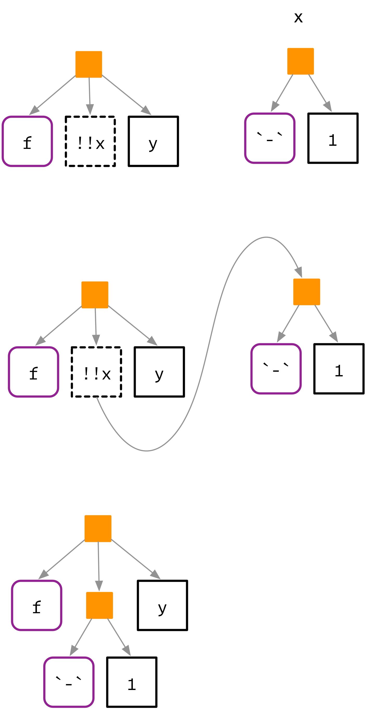
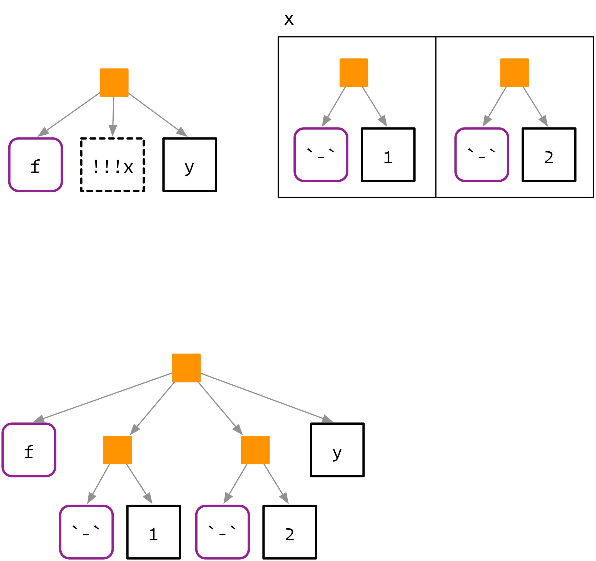
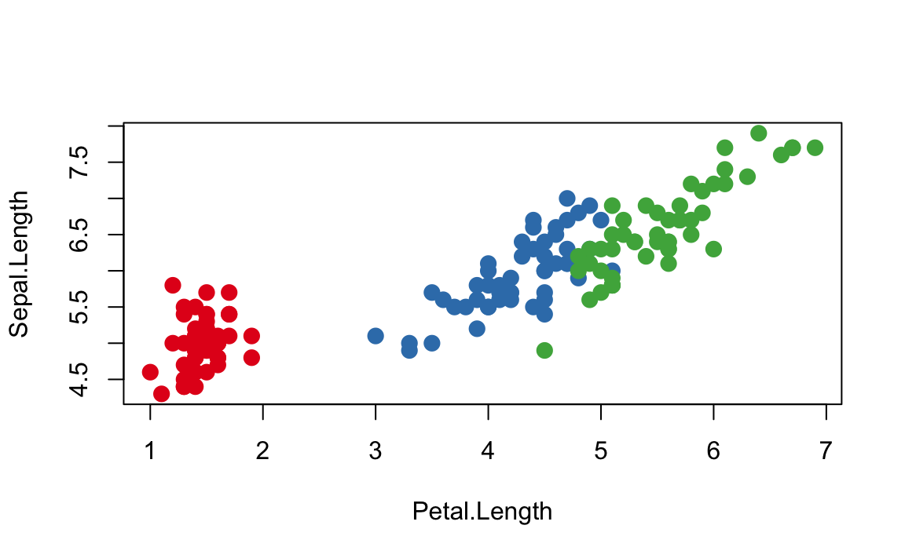

19 Quasiquotation
19.1 Introduction
Now that you understand the tree structure of R code, it’s time to come back to one of the fundamental ideas that make expr() and ast() work: quasiquotation. There are two sides to quasiquotation:
Quotation allows the developer to capture the AST associated with a function argument without evaluating it.
Unquotation allows the user to selectively evaluate parts of an expression that would otherwise be captured.
The combination of these two ideas makes it easy to compose expressions that are mixtures of direct and indirect specification, and helps to solve a wide variety of challenging problems.
In this chapter, we’ll …
Quoting functions have deep connections to Lisp macros. But macros are ususally run at compile-time, which doesn’t have any meaning in R, and they always input and output ASTs. (Lumley (2001) shows one way you might implement them in R). Quoting functions are more closely related to Lisp fexprs, functions where all arguments are quoted by default. These terms are useful to know when looking for related techniques in other programming languages.
library(rlang)
if (packageVersion("rlang") < "0.1.6.9002") {
stop("Chapter currently relies on development version of rlang")
}19.1.1 Motivation
We’ll start with a simple and concrete example that helps motivate the need for unquoting, and hence quasiquotation. Imagine you’re creating a lot of strings by joining together words:
paste("Good", "morning", "Hadley")
#> [1] "Good morning Hadley"
paste("Good", "afternoon", "Alice")
#> [1] "Good afternoon Alice"You are sick and tired of writing all those quotes, and instead you just want to use bare words. To that end, you’ve managed to write the following function:
library(rlang)
library(tidyverse)
#> ── Attaching packages ─────────────────────────────────────────────────────────────────────────────────────────── tidyverse 1.2.1 ──
#> ✔ ggplot2 2.2.1 ✔ purrr 0.2.4
#> ✔ tibble 1.4.2 ✔ dplyr 0.7.4
#> ✔ tidyr 0.8.0 ✔ stringr 1.2.0
#> ✔ readr 1.1.1 ✔ forcats 0.2.0
#> ── Conflicts ────────────────────────────────────────────────────────────────────────────────────────────── tidyverse_conflicts() ──
#> ✖ purrr::%@%() masks rlang::%@%()
#> ✖ purrr::%||%() masks rlang::%||%()
#> ✖ purrr::as_function() masks rlang::as_function()
#> ✖ dplyr::filter() masks stats::filter()
#> ✖ purrr::flatten() masks rlang::flatten()
#> ✖ purrr::flatten_chr() masks rlang::flatten_chr()
#> ✖ purrr::flatten_dbl() masks rlang::flatten_dbl()
#> ✖ purrr::flatten_int() masks rlang::flatten_int()
#> ✖ purrr::flatten_lgl() masks rlang::flatten_lgl()
#> ✖ purrr::invoke() masks rlang::invoke()
#> ✖ dplyr::lag() masks stats::lag()
#> ✖ purrr::list_along() masks rlang::list_along()
#> ✖ purrr::modify() masks rlang::modify()
#> ✖ purrr::rep_along() masks rlang::rep_along()
#> ✖ purrr::splice() masks rlang::splice()
cement <- function(...) {
exprs(...) %>%
map(expr_name) %>%
paste(collapse = " ")
}
cement(Good, morning, Hadley)
#> [1] "Good morning Hadley"
cement(Good, afternoon, Alice)
#> [1] "Good afternoon Alice"(We’ll talk about the details of this implementation later; for now just look at the results.)
Formally, this function quotes the arguments in .... You can think of it as automatically putting quotation marks around each argument. That’s not precisely true as the intermediate objects it generates are expressions, not strings, but it’s a useful approximation for now.
This function is nice because we no longer need to type quotes. The problem, however, comes when we want to use variables. It’s easy to use variables with paste() as we just don’t surround them with quotes:
name <- "Hadley"
time <- "morning"
paste("Good", time, name)
#> [1] "Good morning Hadley"Obviously this doesn’t work with cement() because every input is automatically quoted:
cement(Good, time, name)
#> [1] "Good time name"We need some way to explicitly unquote the input, to tell cement() to remove the automatic quote marks. Here we need time and name to be treated differently to Good. Quasiquotation give us a standard tool to do so: !!, called “unquote”, and prounounced bang-bang. !! tells a quoting function to drop the implicit quotes:
cement(Good, !!time, !!name)
#> [1] "Good morning Hadley"It’s useful to compare cement() and paste() directly. paste() evaluates its arguments, so we need to quote where needed; cement() quotes its arguments, so we need to unquote where needed.
paste("Good", time, name)
cement(Good, !!time, !!name)19.1.2 Theory
Now that you’ve seen the basic idea, it’s time to talk a little bit about the theory. The idea of quasiquotation is an old one. It was first developed by a philosopher, Willard van Orman Quine3, in the early 1940s. It’s needed in philosophy because it helps when precisely delineating the use and mention of words, i.e. between the object and the words we use to refer to that object.
Quasiquotation was first used in a programming language, LISP, in the mid-1970s (Bawden 1999). LISP has one quoting function `, and uses , for unquoting. Most languages with a LISP heritage behave similarly. For example, racket (` and @), clojure (` and ~), and julia (: and @) all have quasiquotation tools that different only slightly from LISP.
Quasiquotation has only come to R recently (2017). Despite its newness, I teach it in this book because it is a rich and powerful theory that makes many hard problems much easier. Quaisquotation in R is a little different to LISP and descendents. In LISP there is only one function that does quasiquotation (the quote function), and you must call it explicitly when needed. This makes these languages less ambiguous (because there’s a clear code signal that something odd is happening), but is less appropriate for R because quasiquotation is such an important part of DSLs for data analysis.
19.2 Quotation
The first part of quasiquotation is quotation: capturing an AST without evaluating it. There are two components to this: capturing an expression directly, and capturing an expression from a lazily-evaluated functional argument. We’ll discuss two sets of tools for these two ways of capturing: those provided by rlang, and those provided by base R.
19.2.1 With rlang
There are four important quoting functions. For interactive exploration, the most important quoting function is expr(). It captures its argument exactly as provided:
expr(x + y)
#> x + y
expr(1 / 2 / 3)
#> 1/2/3(Remember that white space and comments are not part of the AST, so will not be captured by an quoting function.)
expr() is great for interactive exploration, but it’s not useful inside a function, because it always returns exactly what it’s called with:
f <- function(x) expr(x)
f(x + y + z)
#> xInstead, we need another function: enexpr(). This looks at the internal promise object that powers lazy evaluation in R and extracts the expression that was passed to the function:
f <- function(x) enexpr(x)
f(x + y + z)
#> x + y + z(Occassionaly you just want to capture symbols, and throw an error for other types of input. In that case you can use ensym(). In the next chapter, you’ll learn about enquo() which also captures the environment and is needed for tidy evaluation.)
To capture multiple arguments, use enexprs():
f <- function(...) enexprs(...)
f(x = 1, y = 10 * z)
#> $x
#> [1] 1
#>
#> $y
#> 10 * zFinally, exprs() is useful interactively to make a list of expressions:
exprs(x = x ^ 2, y = y ^ 3, z = z ^ 4)
#> $x
#> x^2
#>
#> $y
#> y^3
#>
#> $z
#> z^4
# shorthand for
# list(x = expr(x ^ 2), y = expr(y ^ 3), z = expr(z ^ 4))Use enexpr() and enexprs() inside a function when you want to capture the expressions supplied as arguments by the user of that function. Use expr() and exprs() when you want to capture expressions that you supply.
There’s not much you can do with a list of expressions yet, but we’ll see a few techniques later in case studies: using purrr to work with list of expressions turns out to be a surprisingly powerful tool.
19.2.2 With base R
The base equivalent of expr() is quote():
quote(x + y)
#> x + y
quote(1 / 2 / 3)
#> 1/2/3It is identical to expr() except that does not support unquoting, so it a quoting function, not a quasiquoting function.
The base function closest to enexpr() is substitute():
f <- function(x) substitute(x)
f(x + y + z)
#> x + y + zYou’ll most often see it used to capture unevaluated arguments; often in concert with deparse() to create labels for output. However, substitute() also does “substitution”: if you give it an expression, rather than a symbol, it will substitute in values of symbols defined in the current environment.
f2 <- function(x) substitute(x * 2)
f2(x + y + z)
#> (x + y + z) * 2substitute() provides a sort of automatic unquoting for any symbol that is bound to a value. However, making use of this behaviour can make for hard to read code, because for example, taken out of context, you can’t tell if the goal of substitute(x + y) is to replace x, or, y, or both. If you do want to use substitute() in this way, I recomend that you use the 2nd argument to be explicit:
substitute(x * y * z, list(x = 10, y = quote(a + b)))
#> 10 * (a + b) * zThe base equivalent to exprs() is alist():
alist(x = 1, y = x + 2)
#> $x
#> [1] 1
#>
#> $y
#> x + 2There are two other important base quoting functions that we’ll cover in depth elsewhere:
bquote()provides a limited form of quasiquotation, and is discussed in unquoting with base R.~, the formula, is a quoting function that also captures the environment. It’s the inspiration for quosures, and is discussed in [formulas].
19.2.3 Exercises
What happens if you try and use
enexpr()with an expression? What happens if you try and useenexpr()with a missing argument?Compare and contrast the following two functions. Can you predict the ouput before running them?
f1 <- function(x, y) { exprs(x = x, y = y) } f2 <- function(x, y) { enexprs(x = x, y = y) } f1(a + b, c + d) #> $x #> x #> #> $y #> y f2(a + b, c + d) #> $x #> a + b #> #> $y #> c + dWhat does the following command return? What information is lost? Why?
expr({ x + y # comment })The documentation for
substitute()says:Substitution takes place by examining each component of the parse tree as follows: If it is not a bound symbol in env, it is unchanged. If it is a promise object, i.e., a formal argument to a function or explicitly created using delayedAssign(), the expression slot of the promise replaces the symbol. If it is an ordinary variable, its value is substituted, unless env is .GlobalEnv in which case the symbol is left unchanged.
Create four examples that illustrate each of the different cases.
Why does
as.Date.default()usesubstitute()anddeparse()? Why doespairwise.t.test()use them? Read the source code.pairwise.t.test()assumes thatdeparse()always returns a length one character vector. Can you construct an input that violates this expectation? What happens?
19.3 Evaluation
Typically you have quoted a function argument for one of two reasons:
You want to operate on the AST using the techniques described in the previous chapter.
You want to run, or evaluate the code in a special context, as described in depth next chapter.
Evaluation is a rich topic, so it gets a complete chapter. Here we’ll just illustrate the most important ideas. The most important base R function is base::eval(). Its first argument is the expression to evalute:
ru5 <- expr(runif(5))
ru5
#> runif(5)
eval(ru5)
#> [1] 0.0808 0.8343 0.6008 0.1572 0.0074
eval(ru5)
#> [1] 0.466 0.498 0.290 0.733 0.773Note that every time we evaluate this expression we get a different result.
The second argument to eval() is the environment in which the expression is evaluated. Manipulating the functions in this environment give us amazing power to control the execution of R code. This is the basic technique gives dplyr the ability to turn R code into SQL.
x <- 9
fx <- expr(f(x))
eval(fx, env(f = function(x) x * 10))
#> [1] 90
eval(fx, env(f = function(x) x ^ 2))
#> [1] 8119.4 Unquotation
Evaluation is a developer tool: in combination with quoting, it allows the author of a function to capture an argument and evaluate it in a special way. Unquoting is related to evaluation, but it’s a user tool: it allows the person calling the function to selectively evaluate parts of the expresion that would otherwise be quoted.
Another way of thinking about unquoting is that it provides a code template: you define an AST with some “holes” that get filled in using unquoting.
19.4.1 With rlang
All quoting functions in rlang (expr(), enexpr(), and friends) supporting unquoting with !! (called “unquote”, and pronounced bang-bang) and !!! (called “unquote-splice”, and pronounced bang-bang-bang). They both replace nodes in the AST. !! is a one-to-one replacement. It takes a single expression and inlines the AST at the location of the !!.
x <- expr(a + b + c)
expr(f(!!x, y))
#> f(a + b + c, y)
!!! is a one-to-many replacement. It takes a list of expressions and inserts them at them at the location of the !!!:
x <- exprs(1, 2, 3, y = 10)
expr(f(!!!x, z = z))
#> f(1, 2, 3, y = 10, z = z)
19.4.2 The polite fiction of !!
So far we have acted as if !! and !!! are regular prefix operators like + , -, and !, but they’re not. Instead, from R’s perspective, !! and !!! are simply the repeated application of !:
!!TRUE
#> [1] TRUE
!!!TRUE
#> [1] FALSE!! and !!! have special behaviour inside all quoting functions powered by rlang, and the unquoting operators are given precedence similar to + and -, not !. We do this because the operator precedence for ! is surprisingly low: it has lower precedence that than of the binary algebraic and logical operators. Most of the time this doesn’t matter as it is unusual to mix ! and binary operators (e.g. you typically would not write !x + y or !x > y). However, expressions like !!x + !!y are not uncommon when unquoting, and requring explicit parentheses, (!!x) + (!!y), feels onerous. For this reason, rlang manipulates the AST to give the unquoting operators a higher, and more natural, precedence.
You might wonder why rlang does not use a regular function call. Indeed, early versions of rlang provided UQ() and UQS() as alternatives to !! and !!!. However, these looked like regular function calls, rather than special syntactic operators, and gave people a misleading mental model, which made them harder to use correctly. In particular, function calls only happen (lazily) at evaluation time; unquoting always happens at quotation time. We adopted !! and !!! as the best compromise: they are strong visual symbols, don’t look like existing syntax, and take over a rarely used piece of syntax. (And if for some reason you do need to doubly negate a value in a quasiquoting function, you can just add parentheses !(!x).)
One place where the illusion currently breaks down is base::deparse():
x <- quote(!!x + !!y)
deparse(x)
#> [1] "!(!x + (!(!y)))"Although the R parser can distinguish between !(x) and !x, the deparser currently does not. You are most likely to see this when printing the source for a function in another package, where the source references have been lost. rlang::expr_deparse() works around this problem if you need to manually deparse an expression, but often this does not help because the deparsing occurs outside of your control.
expr_deparse(x)
#> [1] "!!x + (!!y)"One place you’ll see this is during debugging.
19.4.3 With base R
Base R has one function that implements quasiquotation: bquote(). It uses .() for unquoting, but does not support unquote-splicing:
xyz <- bquote((x + y + z))
bquote(-.(xyz) / 2)
#> -(x + y + z)/2However, bquote() is not used by any other function in base R. Instead functions that quote an argument must use some other technique to allow indirect specification (none of which are unquoting). There are four basic forms seen in base R:
A pair of quoting and non-quoting functions. For example,
$has two arguments, and the second argument is quoted. This is easier to see if you write in prefix form:mtcars$cylis equivalent to`$`(mtcars, cyl). If you want to refer to a variable indirectly, you use[[, as it takes the name of a variable as a string.x <- list(var = 1, y = 2) var <- "y" x$var #> [1] 1 x[[var]] #> [1] 2<-/assign()and::/getExportedValue()work similarly.A pair of quoting and non-quoting arguments. For example,
data(),rm(), andsave()allow you to provide bare variable names in..., or a character vector of variable names inlist:x <- 1 rm(x) y <- 2 vars <- c("y", "vars") rm(list = vars)An argument that controls whether a different argument is quoting or non-quoting. For example, in
library(), thecharacter.onlyargument controls the quoting behaviour of of the first argument,package:library(MASS) pkg <- "MASS" library(pkg, character.only = TRUE)demo(),detach(),example(), andrequire()work similarly.Quoting if evaluation fails. For example, the first argument to
help()is non-quoting if it evaluates to a string; if evaluation fails, the first argument is quoted.# Shows help for var help(var) var <- "mean" # Shows help for mean help(var) var <- 10 # Shows help for var help(var)ls(),page(), andmatch.fun()work similarly.
Some quoting functions, like subset(), transform(), and with(), don’t have a non-quoting form. This is because they are primarily wrappers around [ and [<-. Another important class of quoting functions are the base modelling and plotting functions, which quote some of their arguments. For example, lm() quotes the weight and subset arguments, and when used with a formula argument, the plotting function quote the aesthetic arguments (col, cex, etc):
palette(RColorBrewer::brewer.pal(3, "Set1"))
plot(Sepal.Length ~ Petal.Length, data = iris, col = Species, pch = 20, cex = 2)
These functions follow the so-called standard non-standard evaluation rules: http://developer.r-project.org/nonstandard-eval.pdf, and do not provide a standard escaping mechanism. Instead, as we’ll learn in the next chapter, you must use other tools to construct expressions then evaluate them.
19.4.4 Non-standard ASTs
Using unquoting, it is easy to create non-standard ASTs, i.e. ASTs that contain components that are not constants, symbols, or calls. (It is also possible to create non-standard ASTs by directly manipulating the underlying objects, but it’s harder to do so accidentally) These are valid, and occasionally useful, but their correct use is beyond the scope of this book. However, it’s important to learn about them because they can be printed in misleading ways.
For example, if you inline more complex objects, their attributes are not printed. This can lead to confusing output:
x1 <- expr(class(!!data.frame(x = 10)))
x1
#> class(list(x = 10))
lobstr::ast(!!x1)
#> █─class
#> └─<inline data.frame>
eval(x1)
#> [1] "data.frame"In other cases, R will print parentheses that do not exist in the AST:
y2 <- expr(2 + 3)
x2 <- expr(1 + !!y2)
x2
#> 1 + (2 + 3)
lobstr::ast(!!x2)
#> █─`+`
#> ├─1
#> └─█─`+`
#> ├─2
#> └─3And finally, R will display integer sequences as if they were generated with :.
x3 <- expr(f(!!c(1L, 2L, 3L, 4L, 5L)))
x3
#> f(1:5)
lobstr::ast(!!x3)
#> █─f
#> └─<inline integer>In general, if you’re ever confused about what is actually in an AST, display the object with lobstr::ast()!
19.4.5 Missing arguments
f <- function(x) {
x <- enexpr(x)
expr(foo(!!maybe_missing(x)))
}
f()
#> foo()
f(x)
#> foo(x)Generally best reserved for working with existing functions. For new functions, it’s usually preferably to use NULL as a default for optional arguments. See a case study below to generate calls like x[,,1].
19.4.6 Exercises
Given the following components:
xy <- expr(x + y) xz <- expr(x + z) yz <- expr(y + z) abc <- exprs(a, b, c)Use quasiquotation to construct the following calls:
(x + y) / (y + z) -(x + z) ^ (y + z) (x + y) + (y + z) - (x + y) atan2(x + y, y + z) sum(x + y, x + y, y + z) sum(a, b, c) mean(c(a, b, c), na.rm = TRUE) foo(a = x + y, b = y + z)Explain why both
!0 + !0and!1 + !1returnFALSEwhile!0 + !1returnsTRUE.Base functions
match.fun(),page(), andls()all try to automatically determine whether you want standard or non-standard evaluation. Each uses a different approach. Figure out the essence of each approach by reading the source code, then compare and contrast the techniques.The following two calls print the same, but are actually different:
(a <- expr(mean(1:10))) #> mean(1:10) (b <- expr(mean(!!(1:10)))) #> mean(1:10) identical(a, b) #> [1] FALSEWhat’s the difference? Which one is more natural?
19.5 Case studies
Before we continue to the final section of this chapter, the techniques of quasiquotation translated to ..., we have XYZ case studies showing quasiquotation can be used in practice to solve real problems. We’ll also see a couple of examples combining quasiquotation with purrr to generate complex expressions programmatically.
These case studies will use purrr to iterate over lists of expressions to transform them in various ways, and dplyr to motivate some of the problems. We’ll come back to the base quoting functions in the next chapter. Because they don’t support quasiquotation, we’ll need to use techniques of evaluation as well.
library(purrr)
library(dplyr)19.5.1 Map-reduce to generate code
Quasiquotation gives us powerful tools for generating code, particularly when combined with purrr::map() and purr::reduce(). For example, assume you have a linear model specified by the following coefficients:
intercept <- 10
coefs <- c(x1 = 5, x2 = -4)You want to convert it into an expression like 10 + (5 * x1) + (-4 * x2) so you can evaluate it with new data. The first thing we need to turn is turn the character names vector into a list of symbols. rlang::syms() is designed precisely for this case:
coef_sym <- syms(names(coefs))
coef_sym
#> [[1]]
#> x1
#>
#> [[2]]
#> x2Next we need to combine each variable name with its coefficient. We can do this by combining expr() with map map2():
summands <- map2(coef_sym, coefs, ~ expr((!!.x * !!.y)))
summands
#> [[1]]
#> (x1 * 5)
#>
#> [[2]]
#> (x2 * -4)In this case, the intercept is also a part of the sum, although it doesn’t involve a multiplication. We can just add it to the start:
summands <- c(intercept, summands)
summands
#> [[1]]
#> [1] 10
#>
#> [[2]]
#> (x1 * 5)
#>
#> [[3]]
#> (x2 * -4)Finally, we need to reduce the individual terms in to a single sum by adding the pieces together:
eq <- reduce(summands, ~ expr(!!.x + !!.y))
eq
#> 10 + (x1 * 5) + (x2 * -4)As you’ll learn in the next chapter, we than easily evaluate this with any data:
df <- data.frame(x1 = runif(5), x2 = runif(5))
eval(eq, df)
#> [1] 13.59 9.26 9.92 10.05 8.11Or alternatively we could turn it into a function:
args <- map(coefs, ~ missing_arg())
new_function(args, expr({!!eq}))
#> function (x1, x2)
#> {
#> 10 + (x1 * 5) + (x2 * -4)
#> }Very many code generation problems can be solved in a similar way, combining quasiquotation with map functions.
19.5.2 Calling quoting functions
One downside of quoting functions is that when you call a lot of them, it is harder to wrap them in another function in order to reduce duplication. For example, if you see the following code:
(x - min(x)) / (max(x) - min(x))
(y - min(y)) / (max(y) - min(y))
((x + y) - min(x + y)) / (max(x + y) - min(x + y))You can eliminate the reptition with a rescale01 function:
rescale01 <- function(x) (x - min(x)) / (max(x) - min(x))
rescale01(x)
rescale01(y)
rescale01(x + y)Reducing the duplication here is a very good idea, because when you realise that your rescaling technique doesn’t handle missing values gracefully, you only have one place to fix it. It is easy to create rescale01() because min(), max(), and - , are regular functions: they don’t quote any of their arguments.
It’s harder to reduce duplication when a function quotes one or more arguments. For example, if you notice this repeated code:
df %>% group_by(x1) %>% summmarise(mean = mean(y1))
df %>% group_by(x2) %>% summmarise(mean = mean(y2))
df %>% group_by(x3) %>% summmarise(mean = mean(y3))This naive function will not work:
grouped_mean <- function(df, x, y) {
df %>% group_by(x) %>% summmarise(mean = mean(y))
}Because regardless of the input, grouped_mean() will always group by x and compute the mean of y. However, because group_by() and summarise() (like all quoting functions in the tidyverse) use quasiquotation, there’s a standard way to wrap these functions: you quote and then unquote:
grouped_mean <- function(df, x, y) {
x <- enexpr(x)
y <- enexpr(y)
df %>%
group_by(!!x) %>%
summarise(mean = mean(!!y))
}
mtcars %>% grouped_mean(cyl, mpg)
#> # A tibble: 3 x 2
#> cyl mean
#> <dbl> <dbl>
#> 1 4.00 26.7
#> 2 6.00 19.7
#> 3 8.00 15.1(In the next chapter, we’ll learn why enexpr() is not quite general enough and how and why to use quo(), enquo(), and enquos() instead.)
This is a powerful pattern that allows you reduce duplication in your code when it uses quasiquoting functions.
19.5.3 Partition
It’s often useful to combine these two ideas: quoting input arguments and then mildly manipulating them with purrr. For example, imagine that you want to extend dplyr::select() to return two data frames: one with the variables you selected, and one with the variables that remain. (This problem was inspired by https://stackoverflow.com/questions/46828296/.) There are plenty of ways to attack this problem, but one way is to take advantage of select()'s ability to negate column selection expression in order to remove those columns. We can capture the inputs with quasiquotation, then invert each selection call by negating it.
We practice interactively with a list of variables created with exprs():
vars <- exprs(x, y, c(a, b), starts_with("x"))
vars %>% map(~ expr(-!!.))
#> [[1]]
#> -x
#>
#> [[2]]
#> -y
#>
#> [[3]]
#> -c(a, b)
#>
#> [[4]]
#> -starts_with("x")Then turn it into a function:
# library(rlang)
# library(purrr)
# library(dplyr)
# partition.fun <- function(.data, ...) {
# included <- enexprs(...)
# excluded <- map(included, ~ expr(-!!.x))
#
# list(
# incl = select(.data, !!!included),
# excl = select(.data, !!!excluded)
# )
# }
#
# df <- data.frame(x1 = 1, x2 = 3, y = "a", z = "b")
# partition.fun(df, starts_with("x"))
# $incl
# x1 x2
# 1 1 3
# $excl
# y z
# 1 a bNote the name of the first argument: .data. This is a standard convention through the tidyverse because you don’t need to explicitly name this argument (because it’s always used), and it avoids potential clashes with argument names in ....
19.5.4 Tangling with dots
In our grouped_mean() example above, we allow the user to select one grouping variable, and one summary variable. What if we wanted to allow the user to select more than one? One option would be to use .... There are three possible ways we could use ... it:
Pass
...onto themean()function. That would make it easy to setna.rm = TRUE. This is easiest to implement.Allow the user to select multiple groups
Allow the user to select multiple variables to summarise.
Implementing each one of these is relatively straightforward, but what if we want to be able to group by multiple variables, summarise multiple variables, and pass extra args on to mean(). Generally, I think it is better to avoid this sort of API (instead relying on multiple function that each do one thing) but sometimes it is the lesser of the two evils, so it is useful to have a technique in your backpocket to handle it.
grouped_mean <- function(df, groups, vars, args) {
var_means <- map(vars, function(var) expr(mean(!!var, !!!args)))
names(var_means) <- map_chr(vars, expr_name)
df %>%
dplyr::group_by(!!!groups) %>%
dplyr::summarise(!!!var_means)
}
grouped_mean(mtcars, exprs(vs, am), exprs(hp, drat, wt), list(na.rm = TRUE))
#> # A tibble: 4 x 5
#> # Groups: vs [?]
#> vs am hp drat wt
#> <dbl> <dbl> <dbl> <dbl> <dbl>
#> 1 0 0 194. 3.12 4.10
#> 2 0 1 181. 3.94 2.86
#> 3 1 0 102. 3.57 3.19
#> 4 1 1 80.6 4.15 2.03If you use this design a lot, you may also want to provide an alias to exprs() with a better name. For example, dplyr provides the vars() wrapper to support the scoped verbs (e.g. summarise_if(), mutate_at()). aes() in ggplot2 is similar, although it does a little more: requires all arguments be named, naming the the first arguments (x and y) by default, and automatically renames so you can use the base names for aesthetics (e.g. pch vs shape).
grouped_mean(mtcars, vars(vs, am), vars(hp, drat, wt), list(na.rm = TRUE))19.5.5 Slicing an array
One useful tool missing from base R is the ability to extract a slice from an array given a dimension to slice along and an index to take from the slice. For example, if you want to find the first slice of dimension 2 in a 3d array you’d write x[, 1, ]. How can we write a function to make this simpler? It’s more challenging than usual because most of the arguments are missing.
slice <- function(x, along, index) {
stopifnot(length(index) == 1)
nd <- length(dim(x))
indices <- rep(list(missing_arg()), nd)
indices[along] <- index
expr(x[!!!indices])
}
x <- array(sample(30), c(5, 2, 3))
slice(x, 1, 3)
#> x[3, , ]
slice(x, 2, 2)
#> x[, 2, ]
slice(x, 3, 1)
#> x[, , 1]A real slice() would evaluate the generated call, but here I think it’s more illimunating to see the code that’s generated.
19.5.6 Exercises
Implement
filter_or(), a variant ofdplyr::filter()that combines multiple arguments using|instead of&.Implement
arrange_desc(), a variant ofdplyr::arrange()that sorts in descending order by default.Implement the three variants of
grouped_mean()described above:# ... passed on to mean grouped_mean <- function(df, group_by, summarise, ...) {} # ... selects variables to summarise grouped_mean <- function(df, group_by, ...) {} # ... selects variables to group by grouped_mean <- function(df, ..., summarise) {}Add error handling to
slice(). Give clear error messages if eitheralongorindexhave invalid values (i.e. not numeric, not length 1, too small, or too big).
19.6 Dot-dot-dot (...)
Quasiquotation ensures that every quoted argument has an escape hatch that allows the user to unquote, or evaluated, selected components, if needed. A similar and related needs arises with functions that take arbitrary additional arguments with .... Take the following two motivation problems:
What do you do if the elements you want to put in
...are already stored in a list? For example, imagine you have a list of data frames that you want torbind()together:dfs <- list( a = data.frame(x = 1, y = 2), b = data.frame(x = 3, y = 4) )You could solve this specific case with
rbind(dfs$a, df$b), but how do you generalise that solution to a list of arbitrary length?What do you do if you want to supply the argument name indirectly? For example, imagine you want to create a single column data frame where the name of the column is specified in a variable:
var <- "x" val <- c(4, 3, 9)In this case, you could create a data frame and then change names (ie.
setNames(data.frame(val), var)), but this feels inelegant. How can we do better?
19.6.1 do.call()
Base R provides a swiss-army knife to solve these problems: do.call(). do.call() has two main arguments. The first argument, what, gives a funtion to call. The second argument, args, is a list of arguments to pass to that function, and so do.call("f", list(x, y, z)) is equivalent to f(x, y, z).
do.call() gives a straightforward solution to rbind()ing together many data frames:
do.call("rbind", dfs)
#> x y
#> a 1 2
#> b 3 4With a little more work, we can use do.call() to solve the second problem. We first create a list of arguments, then name that, then use do.call():
args <- list(val)
names(args) <- var
do.call("data.frame", args)
#> x
#> 1 4
#> 2 3
#> 3 919.6.2 The tidyverse approach
An alternative way to solve this problems hinges on the recognition that we can reframe these problems as a need for splicing and unquoting argument names. For example, the tidyverse equivalents of rbind() and data.frame(), dplyr::bind_rows() and tibble::tibble(), do not require an additional helper, instead using the same syntax as unquoting:
dplyr::bind_rows(!!!dfs)
#> x y
#> 1 1 2
#> 2 3 4
tibble::tibble(!!var := val)
#> # A tibble: 3 x 1
#> x
#> <dbl>
#> 1 4
#> 2 3
#> 3 9Note the use of := (pronounced colon-equals) rather than =. Unforunately we need this new operation because R’s grammar does not allow expressions as argument names:
tibble::tibble(!!var = value)
#> Error: unexpected '=' in "tibble::tibble(!!var =":= is like a vestigal organ: it’s recognised by R’s parser, but it doesn’t have any code associated with it. It looks like an = but allows expressions on either side, making it a more flexible alternative to =. It is used in data.table for similar reasons.
When used in this context, the behaviour of !!! is sometimes called spatting. It is closed related to star-args (*args) and star-star-kwargs (**kwarg) in Python.
19.6.3 dots_list()
Both dplyr::bind_rows() and tibble::tibble() are powered by rlang::dots_list(...). This function is very similar to list(...), but it interprets !!! and !! specially. If you want to take advantage of this behaviour in your own function, all you need to do is use dots_list() in your own code.
For example, imagine you want to make a version of structure() that understands !!! and !!. We’ll call it set_attr():
set_attr <- function(.x, ...) {
attr <- rlang::dots_list(...)
attributes(.x) <- attr
.x
}
attrs <- list(x = 1, y = 2)
attr_name <- "z"
1:10 %>%
set_attr(w = 0, !!!attrs, !!attr_name := 3) %>%
str()
#> int [1:10] 1 2 3 4 5 6 7 8 9 10
#> - attr(*, "w")= num 0
#> - attr(*, "x")= num 1
#> - attr(*, "y")= num 2
#> - attr(*, "z")= num 3(rlang also provides a set_attr() function with a few extra conveniences, but the essence is the same.)
Note that we call the first argument .x: whenever you use ... to take arbitrary data, it’s good practice to give the other argument names a . prefix. This eliminates any ambiguity about argument names.
dots_list() provides one other handy feature: by default it will ignore any empty argument at the end. This is useful in functions like tibble::tibble() because it means that you can easily change the order of variables without worrying about the final comma:
# Can easily move x to first entry:
tibble::tibble(
y = 1:5,
z = 3:-1,
x = 5:1,
)
# Need to remove comma from z and add column to x
data.frame(
y = 1:5,
z = 3:-1,
x = 5:1
)Use the .ignore_empty() argument to change this behaviour.
19.6.4 Application: invoke() and lang()
One useful application of dots_list() is invoke():
invoke <- function(.f, ...) {
do.call(.f, dots_list(...), envir = parent.frame())
}(At time of writing, purrr::invoke() and rlang::invoke() had somewhat different definitions because they were written before we understood how quasiquotation syntax and ... intersected.)
As a wrapper around do.call(), invoke() gives powerful ways to call functions with arguments supplied directly (in …) or indirectly (in a list):
invoke("mean", x = 1:10, na.rm = TRUE)
# Equivalent to
x <- list(x = 1:10, na.rm = TRUE)
invoke("mean", !!!x)It also allows us to specify argument names indirectly:
arg_name <- "na.rm"
arg_val <- TRUE
invoke("mean", 1:10, !!arg_name := arg_val)Closely related to invoke() is lang():
lang("mean", 1:10, !!arg_name := arg_val)
#> mean(1:10, na.rm = TRUE)lang() generates an expression and is often equivalent to expr(). The advantage of lang() is that you can use :=: you can’t use it with expr() because it does not take ....
19.6.5 Other approaches
Apart from rlang::dots_list() there are several other techniques used to overcome the difficulties described above. One technique is is to take ... but also accept a single unnamed argument that is a list, making f(list(x, y, z)) equivalent to f(x, y, z). The implementation looks something like:
f <- function(...) {
dots <- list(...)
if (length(dots) == 1 && is.list(dots[[1]])) {
dots <- dots[[1]]
}
# Do something
...
}Base functions that use this technique include interaction(), expand.grid(), options(), and par(). Since these functions take either a list, or a ..., but not both, they are slightly less flexible than functions powered by dots_list().
Another related technique is used the RCurl::getURL() function written by Duncan Temple Lang. getURL() take both ... and .opts which are concatenated together. This is useful when writing functions to call web APIs because you often have some options that need to be passed to request. You put these in a common list and pass to .opts, saving ... for the options unique for a given call.
I found this technique particular compelling so you can see it used throughout the tidyverse. Now, however, rlang::dots_list() dots solves more problems, more elegantly, by using the ideas from tidy eval so the tidyverse is slowly migrating to that style.
19.6.6 Exercises
Carefully read the source code for
interaction(),expand.grid(), andpar(). Compare and constract the techniques they use for switching between dots and list behaviour.Explain the problem with this defintion of
set_attr()set_attr <- function(x, ...) { attr <- rlang::dots_list(...) attributes(x) <- attr x } set_attr(1:10, x = 10) #> Error in attributes(x) <- attr: attempt to use zero-length variable name
References
Lumley, Thomas. 2001. “Programmer’s Niche: Macros in R.” R News 1 (3): 11–13. https://www.r-project.org/doc/Rnews/Rnews_2001-3.pdf.
Bawden, Alan. 1999. “Quasiquotation in Lisp.” In PEPM ’99, 4–12. http://repository.readscheme.org/ftp/papers/pepm99/bawden.pdf.
You might be familiar with the name Quine from “quines”, computer programs that when run return a copy of their own source code.↩